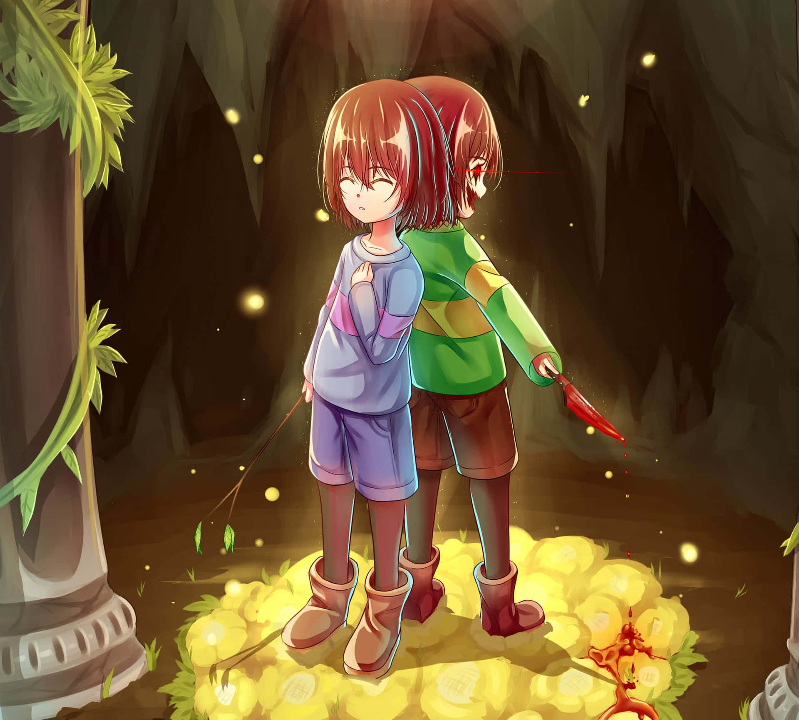

Frisk
The silent protagonist. Frisk's actions define the story. Are you a bringer of peace, or destruction? Their role is a mirror for the player's morality.
Undertale begins with a mysterious yet simple premise: a human child accidentally falls into the Underground—a world sealed off from humanity, inhabited by monsters who were once banished after a great war.
The player navigates this strange land, encountering a diverse cast of characters who react dynamically to your choices. What sets Undertale apart is its unique moral system: you can choose to fight or show mercy, and these choices influence not only dialogue and events—but entire endings.
The game has three primary paths: Pacifist, Neutral, and Genocide. Each reveals different truths about the world and its characters, offering a level of emotional resonance and narrative replayability rarely seen in games.
The silent protagonist. Frisk's actions define the story. Are you a bringer of peace, or destruction? Their role is a mirror for the player's morality.
A laid-back skeleton with sharp wit and a dark side. Known for his puns and laziness, Sans hides deep knowledge about timelines and consequences. His boss battle in the Genocide route is legendary.
Sans' younger brother. Quirky, energetic, and full of ambition to join the Royal Guard. Despite his goofiness, Papyrus is kind and hopes for friendship.
The first monster you meet. Toriel serves as a guardian and motherly figure who tries to protect Frisk from the dangers ahead. Her warm presence makes early moral choices meaningful.
.jpg)
King of the Underground. Asgore's goal is to collect human souls to break the barrier trapping monsters. Though seen as a villain, his pain and regret are evident, making him a tragic character.
A talking flower with no soul—literally. Flowey remembers everything across playthroughs and is deeply manipulative. He challenges the idea of traditional gameplay morality.
Undertale thrives on emotional storytelling. Every character, no matter how silly or strange, has depth. The game explores friendship, loss, regret, redemption, and the burden of choice.
Whether you spare or destroy, Undertale never forgets—and neither will you.